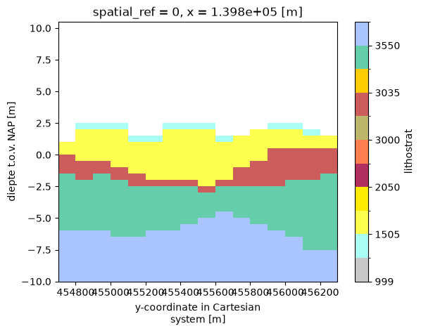
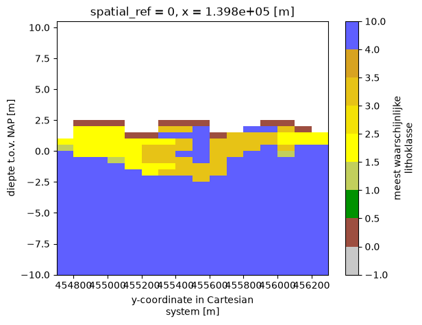
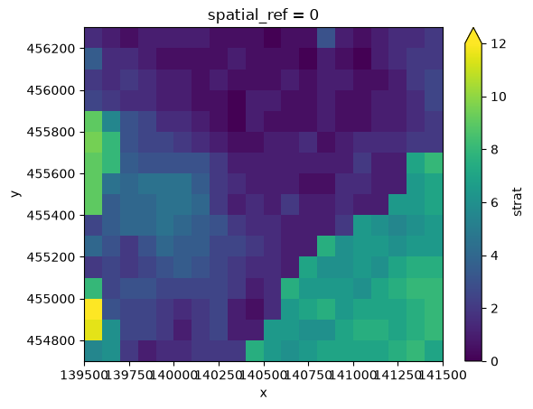

BRO GeoTOP#
GeoST provides support for working with models provided by the BRO, such as GeoTOP. This section explains how GeoST facilitates working with GeoTOP, including performing analyses, making selections, and combining information from the model with, for example, borehole data contained in a Collection.
GeoTOP data can be read from a local NetCDF file, downloaded from the BRO, or accessed directly from the OPeNDAP server of the TNO Geological Survey. See the Reading model data section of this user guide for the available functions for reading GeoTOP data.
Working with GeoTOP#
For this example, we will use the example GeoTOP data for Utrecht Science Park:
import geost
geotop = geost.data.geotop_usp()
geotop
Downloading file 'geotop_usp.nc' from 'https://github.com/Deltares-research/geost/raw/main/data/geotop_usp.nc' to '/home/runner/.cache/geost'.
<xarray.Dataset> Size: 2MB
Dimensions: (y: 16, x: 20, z: 121)
Coordinates:
* y (y) float64 128B 4.548e+05 4.548e+05 ... 4.562e+05 4.562e+05
* x (x) float64 160B 1.396e+05 1.396e+05 ... 1.414e+05 1.414e+05
* z (z) float32 484B -49.75 -49.25 -48.75 ... 9.25 9.75 10.25
spatial_ref int64 8B 0
Data variables: (12/13)
strat (y, x, z) float32 155kB ...
lithok (y, x, z) float32 155kB ...
kans_1 (y, x, z) float32 155kB ...
kans_2 (y, x, z) float32 155kB ...
kans_3 (y, x, z) float32 155kB ...
kans_4 (y, x, z) float32 155kB ...
... ...
kans_6 (y, x, z) float32 155kB ...
kans_7 (y, x, z) float32 155kB ...
kans_8 (y, x, z) float32 155kB ...
kans_9 (y, x, z) float32 155kB ...
onz_lk (y, x, z) float32 155kB ...
onz_ls (y, x, z) float32 155kB ...
Attributes:
title: geotop v01r6s1 (100.0m * 100.0m * 0.5m
references: http://www.dinoloket.nl/detaillering-van-de-bovenste-lagen...
comment: GeoTOP 1.6.1 (lithoklasse)
disclaimer: http://www.dinoloket.nl
terms_of_use: http://www.dinoloket.nl
institution: TNO / Geologische Dienst Nederland
Conventions: CF-1.4
source: Generated by nl.tno.dino.geo3dmodel.generator.GeoTOPVoxelM...
history: Generated on Thu May 01 22:54:36 CEST 2025As you can see, GeoTOP is an xarray.Dataset containing several data variables. As explained in the Model data section, all GeoST functionality is available through the
.gst accessor. For example, we can quickly inspect the bounding box and the minimum and maximum depth extents of the model.
print(geotop.gst.bounds())
print(geotop.gst.vertical_bounds())
(139500.0, 454700.0, 141500.0, 456300.0)
(-50.0, 10.5)
The most important geological information in the model is contained in the strat and lithok variables. These represent the lithostratigraphic units and their corresponding lithologies, respectively. Let’s take a look at the type of data contained in the strat and lithok variables.
print(geotop["strat"].gst.unique())
print(geotop["lithok"].gst.unique())
[1000. 2010. 3030. 3100. 4010. 5000. 5060. 5070. 5120. 6100. 6200.]
[0. 1. 2. 3. 5. 6. 7. 8.]
Inspecting GeoTOP using metadata#
We can see that the strat variable contains numeric codes for each stratigraphic unit. This makes sense from a data storage perspective, but the codes are not very intuitive when we want to know which units they represent. GeoST provides an option to quickly load the metadata supplied by the TNO Geological Survey alongside the model data for both variables. This allows us to work with the model in a more intuitive way. Let’s load both the stratigraphic and lithologic metadata. For now, we will inspect the stratigraphic metadata.
strat_units = geost.bro.geotop_strat_units()
lithok_units = geost.bro.geotop_lithok_units()
print(f"Strat metadata type : {type(strat_units)}")
print(f"Lithok metadata type : {type(lithok_units)}")
strat_units
Strat metadata type : <class 'geost.bro.geotop.GeotopUnits'>
Lithok metadata type : <class 'geost.bro.geotop.GeotopUnits'>
| STR_UNIT_CD | DESCRIPTION | SEQ_NR | RED_DEC | GREEN_DEC | BLUE_DEC | |
|---|---|---|---|---|---|---|
| VOXEL_NR | ||||||
| 1000 | NUAAOP | Antropogene afzettingen, opgebrachte grond | 1.0 | 200 | 200 | 200 |
| 1005 | NUAAES | Antropogene afzettingen, esdekken | 2.0 | 110 | 110 | 110 |
| 1010 | NUNIGR | Formatie van Nieuwkoop, Laagpakket van Griendt... | 3.0 | 132 | 88 | 44 |
| 1045 | NUNInb | Formatie van Nieuwkoop, laag van Nij Beets | 4.0 | 180 | 90 | 20 |
| 1020 | NUNASC | Formatie van Naaldwijk, Laagpakket van Schoorl | 5.0 | 255 | 255 | 160 |
| ... | ... | ... | ... | ... | ... | ... |
| 6300 | NUECgd | Formatie van Echteld (geulafzettingen generati... | 24.0 | 102 | 153 | 205 |
| 6320 | NUNAWOgd | Formatie van Naaldwijk, Laagpakket van Wormer ... | 23.0 | 102 | 153 | 205 |
| 6400 | NUECge | Formatie van Echteld (geulafzettingen generati... | 26.0 | 27 | 101 | 175 |
| 6420 | NUNAWOge | Formatie van Naaldwijk, Laagpakket van Wormer ... | 25.0 | 27 | 101 | 175 |
| 0 | NN | Niet formeel ingedeelde afzettingen of onbekend | NaN | 85 | 85 | 85 |
92 rows × 6 columns
The resulting objects are GeotopUnits instances, which contain a DataFrame with all metadata for the stratigraphic units in GeoTOP. GeotopUnits supports selecting units by their voxel numbers, unit codes, or parts of their unit codes, as well as by their full descriptions.
We can now use the stratigraphic metadata to determine what the unique stratigraphic numbers represent. We can do this by using the select_voxel_nr method and passing it the unique numbers.
strat_units.select_voxel_nr(geotop["strat"].gst.unique())
| STR_UNIT_CD | DESCRIPTION | SEQ_NR | RED_DEC | GREEN_DEC | BLUE_DEC | |
|---|---|---|---|---|---|---|
| VOXEL_NR | ||||||
| 1000 | NUAAOP | Antropogene afzettingen, opgebrachte grond | 1.0 | 200 | 200 | 200 |
| 2010 | NUEC2 | Formatie van Echteld, gedeelte onder Formatie ... | 28.0 | 170 | 255 | 245 |
| 3030 | NUBXWI-SI-KO | Formatie van Boxtel, laagpakketten van Wierden... | 39.0 | 255 | 255 | 80 |
| 3100 | NUBX | Formatie van Boxtel | 47.0 | 255 | 235 | 0 |
| 4010 | NUKR-BXDE | Formatie van Kreftenheye en Formatie van Boxte... | 49.0 | 176 | 48 | 96 |
| 5000 | NUDR | Formatie van Drente | 62.0 | 255 | 127 | 80 |
| 5060 | NUUR2 | Formatie van Urk, gedeelte onder Formatie van ... | 68.0 | 189 | 183 | 107 |
| 5070 | NUST | Formatie van Sterksel | 69.0 | 205 | 92 | 92 |
| 5120 | NUPZ-WA | Formatie van Peize en Formatie van Waalre | 74.0 | 255 | 204 | 0 |
| 6100 | NUECgb | Formatie van Echteld (geulafzettingen generati... | 11.0 | 102 | 205 | 171 |
| 6200 | NUECgc | Formatie van Echteld (geulafzettingen generati... | 22.0 | 170 | 196 | 255 |
We can now clearly see which stratigraphic unit corresponds to each voxel number. For convenience, the select_voxel_nr method also accepts the xarray.Dataset of the GeoTOP model or the xarray.DataArray of the stratigraphic variable directly, producing the same selection result.
units_in_data = strat_units.select_voxel_nr(geotop)
units_in_data
| STR_UNIT_CD | DESCRIPTION | SEQ_NR | RED_DEC | GREEN_DEC | BLUE_DEC | |
|---|---|---|---|---|---|---|
| VOXEL_NR | ||||||
| 1000 | NUAAOP | Antropogene afzettingen, opgebrachte grond | 1.0 | 200 | 200 | 200 |
| 2010 | NUEC2 | Formatie van Echteld, gedeelte onder Formatie ... | 28.0 | 170 | 255 | 245 |
| 3030 | NUBXWI-SI-KO | Formatie van Boxtel, laagpakketten van Wierden... | 39.0 | 255 | 255 | 80 |
| 3100 | NUBX | Formatie van Boxtel | 47.0 | 255 | 235 | 0 |
| 4010 | NUKR-BXDE | Formatie van Kreftenheye en Formatie van Boxte... | 49.0 | 176 | 48 | 96 |
| 5000 | NUDR | Formatie van Drente | 62.0 | 255 | 127 | 80 |
| 5060 | NUUR2 | Formatie van Urk, gedeelte onder Formatie van ... | 68.0 | 189 | 183 | 107 |
| 5070 | NUST | Formatie van Sterksel | 69.0 | 205 | 92 | 92 |
| 5120 | NUPZ-WA | Formatie van Peize en Formatie van Waalre | 74.0 | 255 | 204 | 0 |
| 6100 | NUECgb | Formatie van Echteld (geulafzettingen generati... | 11.0 | 102 | 205 | 171 |
| 6200 | NUECgc | Formatie van Echteld (geulafzettingen generati... | 22.0 | 170 | 196 | 255 |
Basic plots using metadata#
Plotting is often useful for quick data inspections. Using GeotopUnits objects, we can
easily plot simple 2D sections from GeoTOP model data using familiar colours, similar to
how the data are displayed in the BRO viewer.
This is achieved through the
get_plot_colormap
method. We can use the previously created units_in_data to obtain the colormap for the units
present in the model data. Let’s first see what it looks like.
colors = units_in_data.get_plot_colormap()
print(colors)
{'cmap': <matplotlib.colors.ListedColormap object at 0x7b6380135490>, 'norm': <matplotlib.colors.BoundaryNorm object at 0x7b638078fe00>}
The resulting dictionary contains a key "cmap" with a Matplotlib ListedColormap object and
a "norm" with a BoundaryNorm object. The ListedColormap contains the RGB colours, while
the BoundaryNorm defines the discrete intervals for each colour. The "cmap" and "norm"
keys are keyword arguments for most Matplotlib functions, so the dictionary can be passed
directly to many standard plotting methods. Let’s plot a section at an x-coordinate of
139850, from -10 m depth up to the surface:
geotop["strat"].sel(x=139850, z=slice(-10, None)).plot.imshow(x="y", **colors)
<matplotlib.image.AxesImage at 0x7b63797401a0>

Note
Note that we pass the dictionary with the double asterisk (**), which unpacks its contents
as keyword arguments to the plot method.
In the same way, we can do this with the lithological metadata. Here, we do not even have to select the lithologies that are present in the model data first, because they will all be included. We will plot the same section, but now for lithology.
geotop["lithok"].sel(x=139850, z=slice(-10, None)).plot.imshow(
x="y", **lithok_units.get_plot_colormap()
)
<matplotlib.image.AxesImage at 0x7b63795e8cd0>

Using metadata in analysis#
Common analyses may require an understanding of the spatial distribution of a geological formation. For example, if we want to investigate the distribution of Holocene river deposits, such as the “Formatie van Echteld”, we can use the stratigraphic metadata to select this unit and then determine its thickness. First, we select the formation based on its description.
echteld_fm = strat_units.select_description_contains("Formatie van Echteld")
echteld_fm
| STR_UNIT_CD | DESCRIPTION | SEQ_NR | RED_DEC | GREEN_DEC | BLUE_DEC | |
|---|---|---|---|---|---|---|
| VOXEL_NR | ||||||
| 1070 | NUEC1 | Formatie van Echteld, gedeelte boven Formatie ... | 13.0 | 170 | 255 | 245 |
| 2010 | NUEC2 | Formatie van Echteld, gedeelte onder Formatie ... | 28.0 | 170 | 255 | 245 |
| 6000 | NUECga | Formatie van Echteld (geulafzettingen generati... | 9.0 | 118 | 147 | 60 |
| 6100 | NUECgb | Formatie van Echteld (geulafzettingen generati... | 11.0 | 102 | 205 | 171 |
| 6200 | NUECgc | Formatie van Echteld (geulafzettingen generati... | 22.0 | 170 | 196 | 255 |
| 6300 | NUECgd | Formatie van Echteld (geulafzettingen generati... | 24.0 | 102 | 153 | 205 |
| 6400 | NUECge | Formatie van Echteld (geulafzettingen generati... | 26.0 | 27 | 101 | 175 |
We can see that the selection result contains a group of units, in this case those related to the “Formatie van Echteld” (i.e. Echteld Formation). For convenience, GeotopUnits provides methods for retrieving predefined groups of units, such as get_anthropogenic_units, get_holocene_units, and others (see the API Reference).
We can now use the selection result to derive the thickness of the formation. The result is an xarray.DataArray, which we can plot.
echteld_thickness = geotop.gst.get_thickness(echteld_fm)
echteld_thickness.plot.imshow(
x="x", y="y", vmin=0, vmax=12
) # Color scale between 0 and 12 meters
<matplotlib.image.AxesImage at 0x7b63794d07d0>

Combining with Collections#
It is often useful to extract GeoTOP data at specific locations, such as borehole locations, to compare the model with borehole data. We can easily extract GeoTOP data at borehole locations using the select_points method. Let’s load a Collection containing borehole data for the Utrecht Science Park and see how this works:
boreholes = geost.data.boreholes_usp() # Collection instance
geotop_at_locations = geotop.gst.select_points(boreholes.header)
geotop_at_locations
<xarray.Dataset> Size: 424kB
Dimensions: (idx: 67, z: 121)
Coordinates:
* idx (idx) int64 536B 0 1 2 3 4 5 6 7 8 ... 59 60 61 62 63 64 65 66
y (idx) float64 536B 4.56e+05 4.55e+05 ... 4.56e+05 4.56e+05
x (idx) float64 536B 1.396e+05 1.396e+05 ... 1.41e+05 1.412e+05
* z (z) float32 484B -49.75 -49.25 -48.75 ... 9.25 9.75 10.25
spatial_ref int64 8B 0
Data variables: (12/13)
strat (idx, z) float32 32kB ...
lithok (idx, z) float32 32kB ...
kans_1 (idx, z) float32 32kB ...
kans_2 (idx, z) float32 32kB ...
kans_3 (idx, z) float32 32kB ...
kans_4 (idx, z) float32 32kB ...
... ...
kans_6 (idx, z) float32 32kB ...
kans_7 (idx, z) float32 32kB ...
kans_8 (idx, z) float32 32kB ...
kans_9 (idx, z) float32 32kB ...
onz_lk (idx, z) float32 32kB ...
onz_ls (idx, z) float32 32kB ...
Attributes:
title: geotop v01r6s1 (100.0m * 100.0m * 0.5m
references: http://www.dinoloket.nl/detaillering-van-de-bovenste-lagen...
comment: GeoTOP 1.6.1 (lithoklasse)
disclaimer: http://www.dinoloket.nl
terms_of_use: http://www.dinoloket.nl
institution: TNO / Geologische Dienst Nederland
Conventions: CF-1.4
source: Generated by nl.tno.dino.geo3dmodel.generator.GeoTOPVoxelM...
history: Generated on Thu May 01 22:54:36 CEST 2025Note
Note that you also can directly get a geost.Collection by calling geotop.gst.select_points(boreholes.header, return_collection=True).
The result is an xarray.Dataset with a new idx dimension. Note that variables such as strat now have (idx, z) dimensions. The select_points method selects the voxel columns containing each borehole, using the index order of the boreholes in the Collection.
The selection result can be used to compare individual boreholes with their corresponding voxel columns or as a starting point for further analyses. GeoST also supports adding model information to the data table of a Collection. See the examples section for more details.
Ensuring the correct model version#
Since the stratigraphic and lithologic metadata are directly tied to a specific GeoTOP model version, it is important to ensure that the metadata remain aligned with the correct model version. A newer model version may add or remove units, which could lead to unreliable results if the metadata and model are not matched correctly.
We can check the model version stored in the metadata and verify that it matches the version of the current GeoTOP model using a GeotopUnits instance.
print(f"Metadata version strat: {strat_units.geotop_version}")
print(f"Strat versions match: {strat_units.check_version_matches(geotop)}")
print(f"Metadata version lithok: {lithok_units.geotop_version}")
print(f"Lithok versions match: {lithok_units.check_version_matches(geotop)}")
Metadata version strat: v01r6s1
Strat versions match: True
Metadata version lithok: v01r6s1
Lithok versions match: True
We can see that the model version for both the stratigraphic and lithologic metadata is v01r6s1, which matches the current GeoTOP model version. If the versions do not match, a warning will be raised.
For analysis methods that use a GeotopUnits instance, such as the get_thickness example above, this version check is performed automatically. A mismatch between the metadata and model versions will therefore raise a warning. We can demonstrate this by changing the model version of the GeoTOP model and then deriving the thickness of the Echteld Formation as before.
geotop.attrs["title"] = "Changed version number"
echteld_thickness = geotop.gst.get_thickness(echteld_fm)
/home/runner/work/geost/geost/geost/bro/geotop.py:226: UserWarning: GeoTOP version mismatch: metadata version is v01r6s1, model version is 'Changed version number'
warnings.warn(
A warning is now raised indicating that the model and metadata versions do not match. When this occurs, we recommend updating GeoST, as we aim to keep the metadata aligned with the latest GeoTOP model version. An updated version of GeoST will therefore include the corresponding updated metadata.